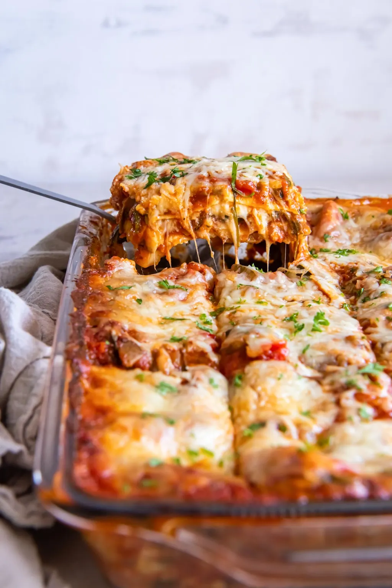

Veggie-packed comfort food: Scrumptious veggies abound in this meatless lasagna recipe.
Easy Recipe: Using no-boil lasagna noodles saves prep time (and means less dishes to wash!). To prep the lasagna, you’ll chop and sauté the veggies, give the sauce a quick simmer, then layer and bake.
Ingredients:
- olive oil
- ricotta
- egg
- onion
- green pepper
- parsley
- noodles
- mozzarella cheese
Directions
- Sauté the vegetables in olive oil until softened. Then stir in the minced garlic.
- Stir in the marinara and seasonings, then simmer for 10-15 minutes, stirring occasionally.
- Next, stir the spinach into the sauce.
- Layer the ingredients in the baking dish. Start by spreading 1 cup of the sauce over the bottom of the baking dish. Then layer noodles, sauce, ricotta, mozzarella, Parmesan. Repeat this layer of ingredients once more. For the top layer, use noodles, sauce, mozzarella and Parmesan.
- Bake. Cover the lasagna with foil and bake at 375° F for 35 minutes. Then uncover and continue baking for 10-15 more minutes, until the lasagna is hot and bubbly on the sides and golden brown on top.
- Let it rest! Let the lasagna rest for 15 minutes before slicing and serving. The rest time allows the lasagna to set up so it won’t be too soupy when serving. Don’t skip it! Then sprinkle on some fresh basil or parsley and enjoy.